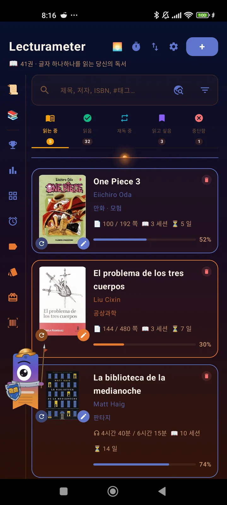
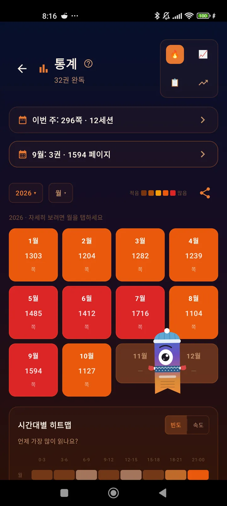
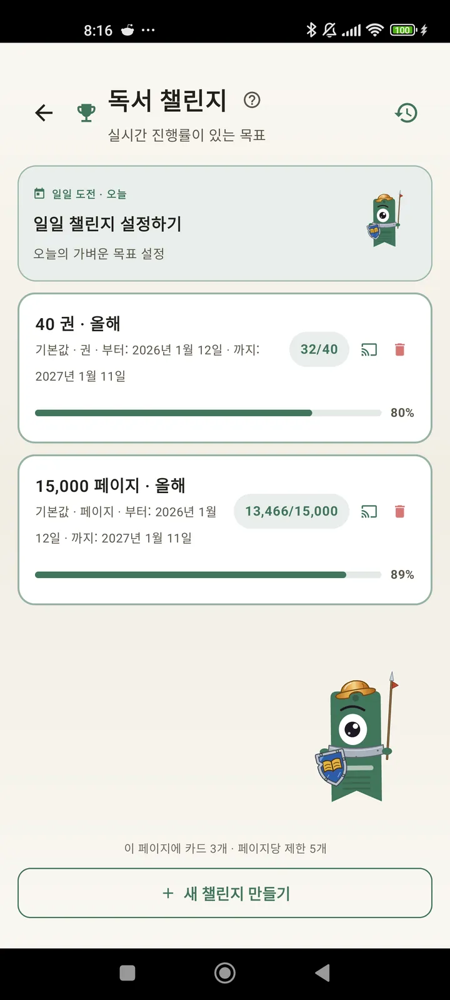

글로벌 챌린지 · 14일
대독서
- 타이머로 잰 시간(분)이 집계돼요. 책, 코믹스, 만화, 오디오북 모두 포함이에요.
- 커뮤니티 전체의 공동 목표예요. 넘어서도 계속 집계돼요.
- 별칭으로 보는 실시간 순위표, 아바타는 내 Pagi.
- 끝나면 모든 참가자에게 내 순위가 담긴 이벤트 카드가 주어져요.
Android와 iOS용 독서 기록 앱.
세션 시간을 재고 실제로 어떻게 읽는지 확인해 보세요.
계정이 필요 없어요. 데이터는 휴대폰에만 저장돼요.
정말 멋진 앱이에요. 잘 정리되어 있고 독서 앱에 필요한 건 다 있어요.Play Store 리뷰의 전반적인 반응

기록한 모든 세션으로 앱이 계산하는 여섯 가지 지표예요. 지어낸 숫자는 없어요. 아직 데이터가 없으면 표시되지 않아요.
화면이 꺼져 있어도 타이머가 완벽하게 작동해요.
세 가지 핵심: 서재, 타이머, 통계.
책을 상태별로 정리하는 다섯 개의 책장.
세션을 마치면 얼마나, 어떤 속도로 읽었는지 알 수 있어요. 앱이 닫히거나 멈춰도 시간은 사라지지 않아요.

어느 달에 가장 많이 읽었을까요? 한 달 중 어느 날에? 하루 중 몇 시에 가장 많이 읽을까요? Lecturameter가 알려 드려요!
각 기능 자세히 보기: 독서 타이머 · 독서 기록 앱 · 독서 통계 · Goodreads 대안 도서 카탈로그
챌린지, Bingo, 위젯 등 독서를 제대로 즐기기 위한 다양한 기능. 3.7 새 기능: 챌린지 위젯과 Bingo 위젯.

페이지, 연속 기록, 장르별로 목표를 세워 보세요. 활성 챌린지는 무료로 15개까지, Pro로는 무제한이에요. 한도에 포함되지 않는 맞춤 일일 챌린지도 있어요.

매일 새로운 목표. 자정 전에 챌린지를 완료해서 연속 기록을 이어 가세요.

매달 테마 칸이 있는 새 Bingo 두 개. 가로줄, 세로줄 또는 판 전체를 완성해 보세요.

매주 월요일, 한 주를 한눈에: 읽은 페이지, 총 시간, 연속 기록, 그리고 지난주와의 비교.

한 달이 끝나면 Lecturameter가 정리해 줘요: 페이지, 시간, 완독한 책, 날마다의 독서 속도, 그리고 이달의 책.

이달의 Bingo 판을 언제나 한눈에. 완료한 칸과 만든 줄이 표시돼요.

지금 읽는 책을 홈 화면에서 바로 확인하세요: 표지, 제목, 저자, 페이지, 진행률이 항상 최신으로 표시돼요. 원하는 곳에 맞게 크기를 조절할 수 있어요.
진짜 이 앱은 치료 같아요. 하루에 두어 페이지 읽던 제가 이제 하루 20페이지쯤 읽고, 계속 늘고 있어요이메일로 받은 사용자 의견

앱을 열지 않고도 최근 몇 달을 빠르게 확인하세요. 달마다 읽은 페이지를 막대로 보여 주고 이번 달은 강조되어서, 지난달보다 잘하고 있는지 한눈에 알 수 있어요.

진행 중인 챌린지와 진행률을 홈 화면에서. 표시할 챌린지는 챌린지 화면에서 고를 수 있어요.
일시중지는 중단과는 다른 별도의 상태예요. 책은 둔 자리에서 기다리고, 일시중지한 날은 계산되지 않아요.
스토리에 바로 쓸 수 있는 세로 1080×1920 카드를 만들어, 이미 쓰는 곳에 공유하세요. 계정도 프로필도 팔로워도 필요 없어요. 3.9 / iOS 1.1.0에서는 주간·월간 요약이 새 디자인과 더 많은 통계로 바뀝니다.
이벤트는 진행 중일 때 앱에 나타나요. 지금은 두 종류가 있어요. 전 세계 독서 챌린지와, 내 책으로 하는 카드 게임이에요.
글로벌 챌린지 · 14일
Lecturameter Quest
참여하려면 만 16세 이상이어야 해요. 지금 진행 중인 이벤트가 없으면 앱이 알려 줘요.
Pagi는 Lecturameter의 마스코트예요. 책 읽는 동안 곁을 지켜 주는 움직이는 책갈피죠. Pagi는 앱의 모든 테마에 맞춰 색이 바뀌어요.


Lecturameter는 현대적인 독서 트래커입니다. Lecturameter 99는 그 레트로 재해석으로, 더 낫지도 못하지도 않은 또 하나의 선택지입니다.
Android와 iOS를 위한 현대적인 독서 트래커.
카드 등록 없이 Pro 기능을 7일 동안 사용해 보세요. 체험이 끝나면 Pro를 사지 않아도 원하는 Pro 테마 하나를 무료로 드려요.

앱 전체가 영원히 무료.

구독이 아닌 한 번만 구매.
iOS 출시 기념 할인: 첫 한 달 동안 €2.99. 그 후에는 €4.99(Android와 같은 가격). 여전히 한 번만 구매하면 돼요.
출시 첫 달 이후에는 Android와 iOS 가격이 같아요.
앱 안에서 Pro를 7일간 무료로 체험
체험에 카드 등록 필요 없음
Lecturameter에 새로 추가된 것들.
iPhone 버전에는 Android와 같은 주요 기능이 있어요: 서재, 독서 타이머, 통계, 챌린지, Bingo, Pagi, 그리고 테마. 차이점은 다음과 같아요.